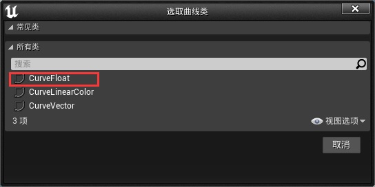
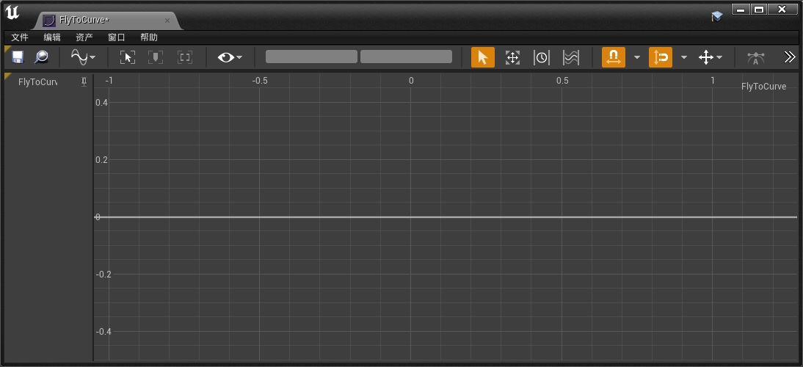
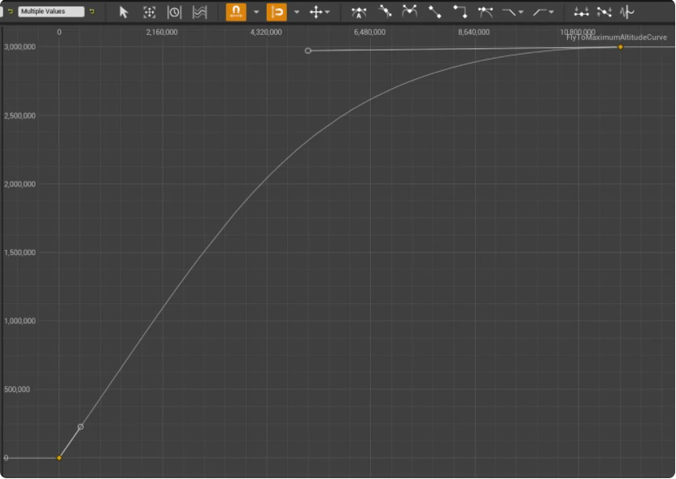
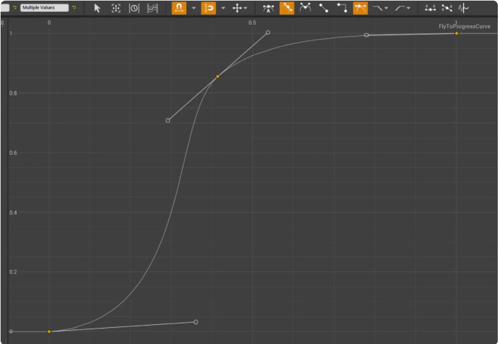
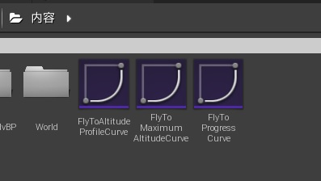
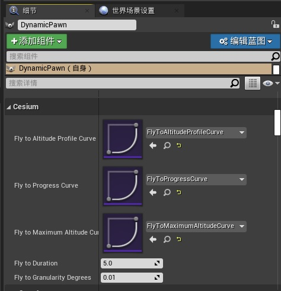

目标
学习使用虚幻引擎的蓝图系统编程，实现在地球上的两个位置之间平稳飞行。
- 在虚幻引擎中使用地图坐标
- 在感兴趣的位置创建 viewpoints
- 创建一个蓝图，使位置的切换变得平滑
第一步：创建一个关卡
参考前面的步骤创关卡，并定位到澳大利亚悉尼
Origin Latitude = -33.871799 Origin Longitude = 151.206696 Origin Height = 3000.0
第二步：添加 DynamicPawn actor
第三步：在蓝图中设置转换
-
打开关卡蓝图
-
蓝图联接图
创建墨尔本经纬度向量
longitude = 144.9631
latitude = -37.8136
height = 2000

第四步：自定义飞行过渡
设置飞行曲线：
- Fly To Altitude Profile Curve
- Fly to Maximum Altitude Curve
- Fly to Progress Curve
添加 Fly To Curves actor，这是一个UCurveFloat，这个函数用来控制计算从源头到目的地的路径插值。
-
在【内容】面板右击，选择【其他】【曲线】，选择【CurveFloat】，并命名


-
双击刚才创建的 Curve 对象，打开曲线编辑器。右击曲线，添加三个关键帧，效果如下：



-
全选三个关键帧结点，在上方的工具条中选择【三次插值】和【加权切线】

-
拖动加权切线

-
添加 【Fly to Maximum Altitude Curve】和【Fly to Progress Curve】
- Fly to Maximum Altitude Curve shape and curve options

- Fly to Progress Curve shape and curve options

-
调整三个曲线，一旦对曲线的形状感到满意，就可以将它们分配给 DynamicPawn 角色的【细节】面板中相应的变量


第五步：飞行到地理标记
输入起始和结束的 WGS84 坐标来指定飞行并不总是很方便。在某些情况下，可以通过放置地理标记来避免这种情况。这些标记可以直接作为在球上的目标位置（这些地理标记都是有地理参考的网格体）。
-
在场景中放置一个静态网格体，例如立方体，这个就可以做为我们的地理标记，然后在 UE 编辑器中调整需要的场景视角，右击放入的静态网格体，选择【将对象对齐到视图】，将地理标记准确的放置在 UE 编辑器当前摄像机所在位置，并对齐摄像机朝向。（注意：如果当前项目有【子关卡】，要将地理标记放到【持久关卡】中）。


-
将放置的静态网格体设置为可移动的。

-
添加 Cesium Globe Anchor 组件

-
在【关卡蓝图】中添加键盘事件。
-
将 DynamicPawn 拖入到蓝图中，添加 【Inaccurate Fly to Location ECEF】函数。

-
将放置的静态网格体和 CesiumGeoreference 拖入到蓝图中。添加 CesiumGeoreference 对象的【Inaccurate Transform Ue to Ecef】函数，将输出结果连接到【Inaccurate Fly to Location ECEF】，然后添加获取静态网格体位置【GetActorLocation】的函数，将输出结果连接到【Inaccurate Transform Ue to Ecef】，效果如下图：

-
还可以在【Inaccurate Fly to Location ECEF】函数中修改最终点的 Yaw 和 Pitch 参数，调整相机的最终朝向